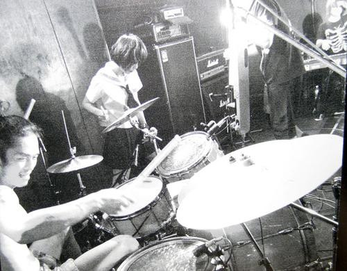

☆ Sobre la banda
Midori (ミドリ) fue una banda japonesa de rock formada en Osaka en 2003. Su música combinaba elementos de jazz, noise, art punk, punk jazz, post-hardcore y rock experimental.
El grupo comenzó con Mariko Gotō y Yoshitaka Kozeni, antiguos integrantes de Usagi. La formación fue cambiando durante sus primeros años.

☆ Miembros
- Mariko Gotō — voz y guitarra.
- Hajime / Hajimetal — teclados.
- Yoshitaka Kozeni — batería.
- Keigo Iwami — contrabajo.
Formación final de la banda. (las imagenes que faltan es porque no encontré nada en internet).
☆ Discografía
Álbumes
- Second ♥ (2007)
- あらためまして、はじめまして、ミドリです (2008)
- 新世界 / Shinsekai (2010)
EP
- ファースト♥ / First ♥ (2005)
- 清水 / Shimizu (2007)
- ライブ!! / Live!! (2008)

☆ Ultimo Concierto
La separación fue anunciada por Mariko Gotō el 25 de diciembre de 2010. El último concierto, titulado Sayonara, Gotō-san, se realizó el 28 de diciembre de ese año.
Puedes hacer click en la imagen de abajo para acceder al concierto.